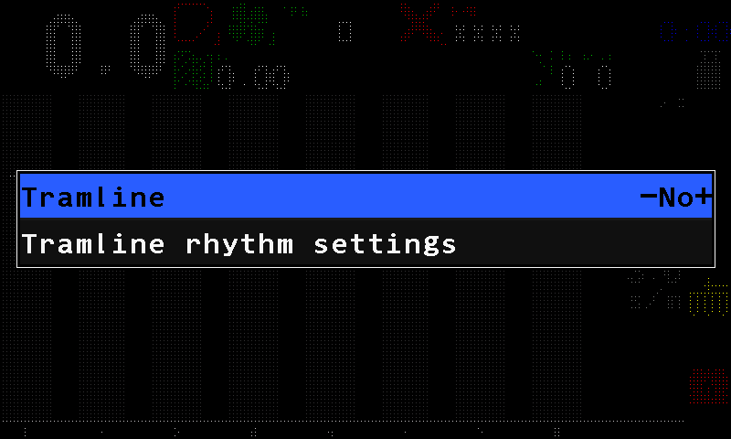

Paramètres du semoir
La largeur de travail, les modes de semis et de fertilisation, le jalonnage, l'affectation des tronçons aux actionneurs et les deux étalonnages qui exigent que la machine roule.
« Settings » (réglages) → « Seeding machine parameters » (paramètres du semoir). La rubrique exige le niveau « Agronomist » (agronome) (Activer le niveau Agronomist) et reste masquée sur une machine qui n'a ni capteur de vitesse ni actionneur de jalonnage. Son contenu dépend du profil.

- « Width, cm » (largeur) — la largeur de travail. La valeur sélectionnée se tient entre –[** et **]+.
- « Mode of seeding » (mode de semis) — « Flow » (débit), « Hybrid » (hybride) ou « Precise » (précis).
- « Tramline » (jalonnage) — le sous-menu de jalonnage.
- « Speed calibration » (étalonnage de la vitesse) — lance l'étalonnage de la vitesse.
- « Reset to defaults » (valeurs par défaut) — valeurs d'usine de ce menu. Niveau Service uniquement.
« Width, cm »
La largeur de travail de l'outil. La surface travaillée en est déduite : elle doit donc être saisie. Appuyez sur « MENU » sur la rubrique : le pavé numérique s'ouvre. Tapez les chiffres — la touche en haut à droite efface le dernier — et touchez « OK » pour valider, ou appuyez sur « BACK » pour conserver l'ancienne valeur.

« Mode of seeding », « Mode of fertilizers »
Trois modes dans chaque cas (« Mode of fertilizers » : mode d'engrais) :
| Mode | Unité | Pour |
|---|---|---|
| « Flow » | graines par seconde | semoirs en ligne |
| « Hybrid » | graines par mètre | semoirs en ligne — recommandé |
| « Precise » | graines par mètre, manques et doubles comptés | semoirs monograine de précision |
« Mode of liquid fertilizer »
« Flow » (litres par minute) ou « By area » (à la surface : litres par hectare). Affiché seulement quand aucun contrôleur de pompe d'engrais liquide ne figure dans le profil — avec un contrôleur, le boîtier choisit lui-même le mode.
« Actuators to sensors mapping »
Cette rubrique (affectation des capteurs aux actionneurs) indique quels capteurs de tronçon appartiennent à quel actionneur de jalonnage ou à quel moteur électrique. Quand cet actionneur ferme ses tronçons, leurs capteurs passent à la surveillance du jalonnage.

Une affectation est une plage : « Range start » (début de plage) et « Range end » (fin de plage) — des nombres égaux désignent un seul tronçon. Jusqu'à quatre plages peuvent être rattachées à un actionneur. Sur une machine à moteurs de dosage, l'écran propose aussi « Motors to sensors mapping » (affectation des capteurs aux moteurs).
« Tramline »
Les rythmes de jalonnage, dans un sous-menu à part de deux rubriques : « Tramline » (« No » (non) / « Yes » (oui)) et « Tramline rhythm settings » (réglages du rythme de jalonnage).

Réglage d'un rythme : Rythme de jalonnage.
« Speed calibration » et « Dispenser calibration »
Les deux étalonnages qui exigent que la machine roule. « Dispenser calibration » (étalonnage du doseur) porte un nombre à côté : le doseur à étalonner, ou 0 pour les étalonner tous à la fois.
Votre machine fait quelque chose que cette page n'explique pas ? Écrivez à support@agriwelt.com — un ingénieur vous répond.